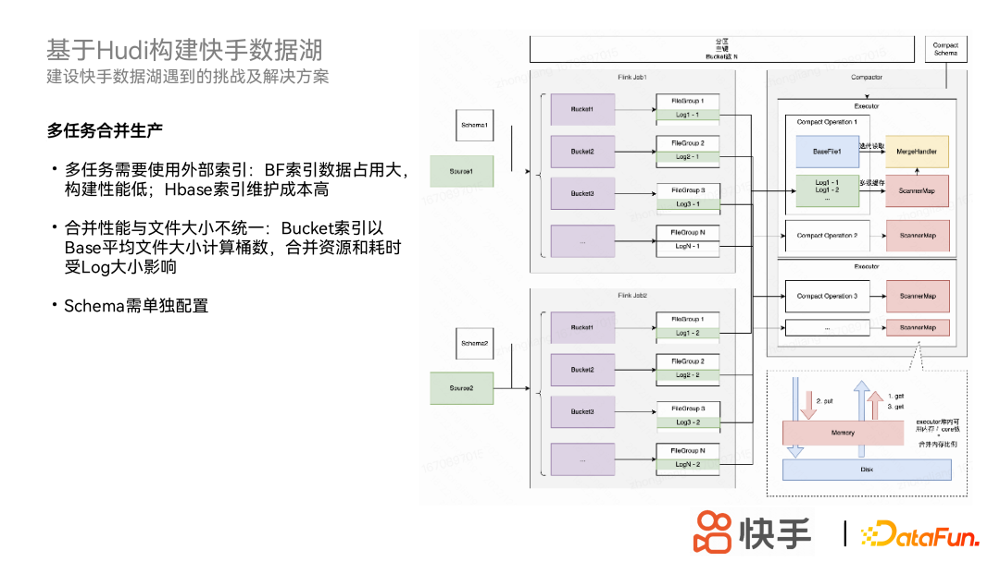
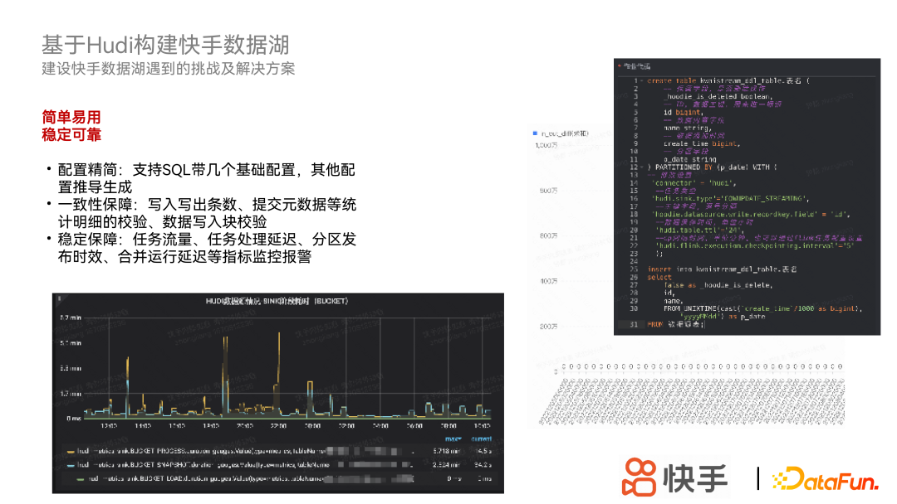
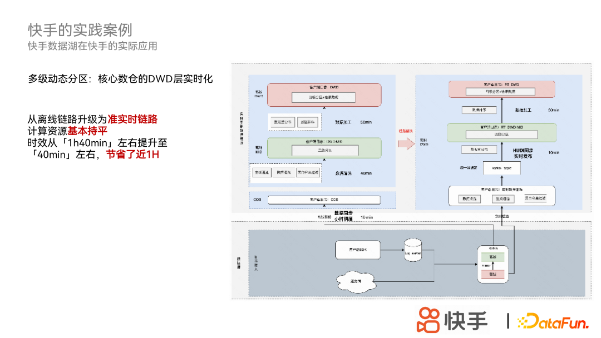

快手流批一体数据湖构建实践
转自公众号：DataFunTalk
http://mp.weixin.qq.com/s?__biz=MzU1NTMyOTI4Mw==&mid=2247649915&idx=1&sn=643ea68735f1f54fb592e1f69ff2d575

导读 本次将介绍快手为什么建设数据湖，在数据湖建设过程中遇到的问题和取得的成果，并对未来发展进行展望。
主要内容包括以下四大部分：
1. 数据湖架构
2. 基于 Hudi 构建快手数据湖
3. 快手的实践案例
4. 快手的发展规划
数据湖架构：从离线数仓到湖仓一体的转变




Q2：Compaction 资源错配的问题怎么解决？异步的 Compaction 是否有相关的经验可以分享一下？